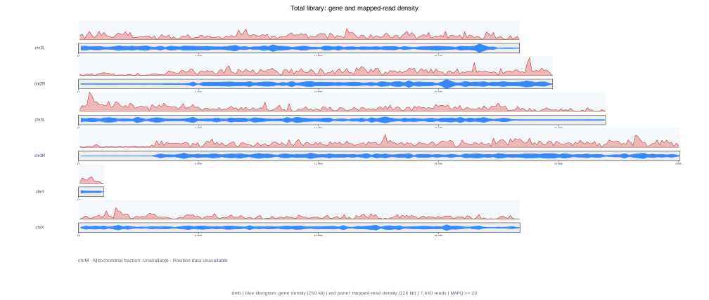
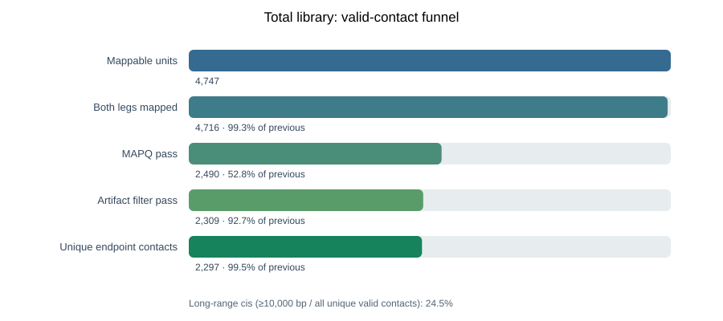
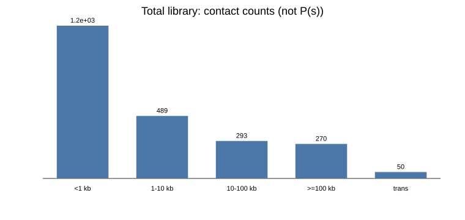
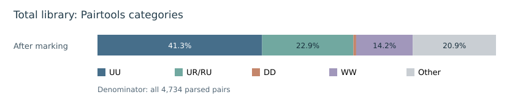
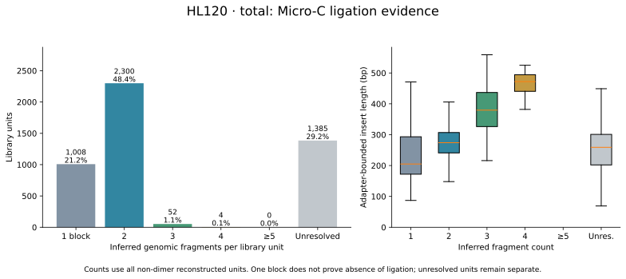
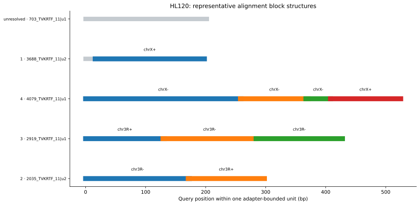
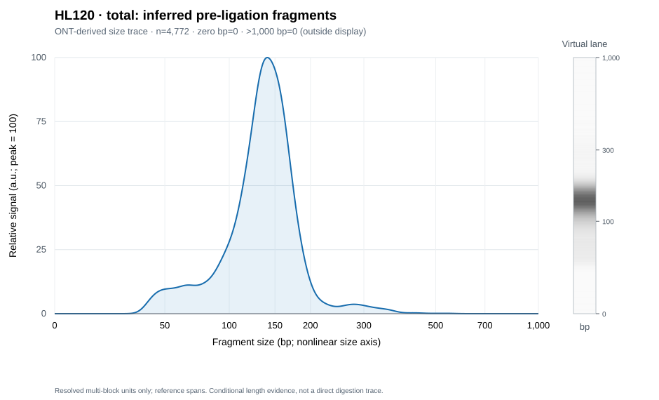
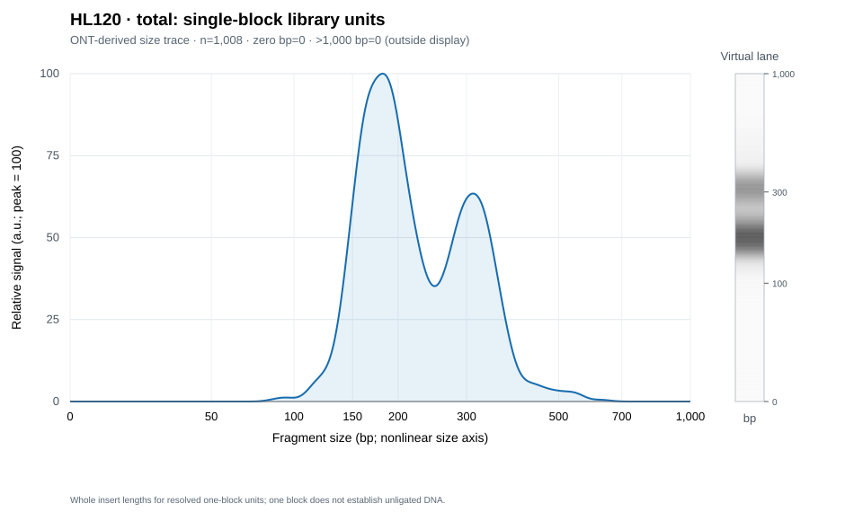

| Metric | Total library | Reference interval |
|---|---|---|
| Raw reads ⓘ | 4,799 | ≥500 |
| ONT sequencing QC ⓘ | pass | Local yield screen |
| Mean read Q ⓘ | 21.39 | Chemistry-specific |
| Raw median length ⓘ | 402 bp | Library-dependent |
| Raw read N50 ⓘ | 418 bp | Library-dependent |
| Inner-anchor reconstruction rate ⓘ | 94.5% | 50.0%–100.0% |
| Library | i5 (P5 side) | i7 (P7 side) | Support |
|---|---|---|---|
| lib01 | CAGGACGT | CTGAAGCT | 98.4% |
CAGGACGTAdapteri5 sideTruSeqInsertSample DNAAdapteri7 sideTruSeqi78 bpCTGAAGCTP7Standard3′i5/i7 show resolved index sequences. Short arrows mark read starts and directions, not read lengths. Full P5/P7 and adapter sequences are listed below.
Sequences follow the physical 5′ P5-to-P7 strand. Detected sequences are matched reference motifs, not de novo consensus calls. Custom sequences without supporting matches are marked as configured. Standard P5/P7 handles are shared across library types and do not identify a preparation kit.
| Element | Type | Evidence | Sequence · 5′ → 3′ |
|---|---|---|---|
| P5 | Standard | Matched · 4,305 units | AATGATACGGCGACCACCGAGATCTACAC |
| Adapter · i5 side | TruSeq | Matched · 4,749 units | ACACTCTTTCCCTACACGACGCTCTTCCGATCT |
| Adapter · i7 side | TruSeq | Matched · 4,749 units | AGATCGGAAGAGCACACGTCTGAACTCCAGTCAC |
| P7 | Standard | Matched · 4,246 units | ATCTCGTATGCCGTCTTCTGCTTG |
| Metric | Total library | Reference interval |
|---|---|---|
| Adapter-dimer QC ⓘ | pass | ≥20 units; see burden |
| Adapter-dimer burden ⓘ | 0.0% | 0.0%–5.0% |
| Insert median length ⓘ | 264 bp | Protocol-specific |
| Both outer handles detected ⓘ | 81.0% | Both P5 and P7 expected |
| All-unit index assignment ⓘ | 98.5% | Prefer high assignment |
| Primary-alignment rate ⓘ | 99.6% | 50.0%–100.0% |
| Mappable units ⓘ | 4,747 | Depth-dependent |
| Metric | Total library | Reference interval |
|---|---|---|
| Units with both outer handles ⓘ | 3,847 | Depth-dependent |
| Ambiguous index fraction ⓘ | 0.0% | Prefer 0% |
| Unassigned index fraction ⓘ | 1.5% | Prefer 0% |
| Unresolved dimer candidates ⓘ | 0 | Prefer 0; assess fraction |
| Reconstructed-unit dimer rate ⓘ | 0.0% | Prefer 0% |
| Concatemer rate ⓘ | 4.2% | Preparation-dependent |
| Library units ⓘ | 4,749 | Depth-dependent |
| Units per complete read ⓘ | 1.048 | ≥1 by definition |
| Canonical adapter dimers ⓘ | 0 | Prefer 0; assess fraction |
| Structure-matched adapter dimers ⓘ | 0 | Prefer 0; assess fraction |
| Raw structure-dimer rate ⓘ | 0.0% | Prefer 0% |
Hover a reference value for its basis. Numeric colored ranges are local screening settings unless stated otherwise. Biological expectations, statistical baselines and design objectives provide context and do not introduce new pass/fail thresholds.
Adapter dimers. ONT raw-molecule dimer burden is a count-based screening measurement. It is not interchangeable with electrophoresis mass fraction or platform-specific loading limits. The configured thresholds are local screening settings.
Library handles. The expected library architecture includes both P5 and P7. Observed ONT handle recovery also depends on sequencing and reconstruction.
Fragment sizes. CUT&RUN has target-dependent short and nucleosomal components. Micro-C MNase titration evaluates approximately 150-bp nucleosomal DNA and longer products before ligation. Neither provides a universal acceptable insert median or a calibrated threshold for the inferred fragments in this report. Skene & Henikoff, 2017; Mapping Mammalian 3D Genome Interactions with Micro-C-XL.
The 120–170 bp raw-size window is supportive only. Dimer-like units have a ≤10-bp central gap. Unreconstructed template matches remain candidates; resolved 11–50 bp inserts are retained. Full-library sizes include expected outer adapters and inferred physical indexes, including units with undetected outer handles. The main profile weights each recovered unit by its modeled full-library length; count-based profiles are expandable. Curves are conditional on sequencing and adapter recovery and do not measure TapeStation fluorescence or NGS molarity.
Full library = insert + 136 bp adapter/index sequence. 4,749 modeled units. The main curve weights each unit by its full-library length.
Download both profiles · Modeled unit lengths · Model details
A read with several library units contributes several full-library counts but one raw-read count. Each curve is scaled to its own peak of 100.
Inspect broad coverage imbalance and isolated concentration. Gene density and shallow coverage alone cannot establish target-specific enrichment or copy-number changes.

| Metric | Total library | Reference interval |
|---|---|---|
| Unique endpoint contacts ⓘ | 2,297 | Depth-dependent |
| Cis ratio ⓘ | 97.8% [97.1%, 98.3%] · 2,247/2,297 | No biological cutoff |
| Long-range cis fraction ⓘ | 24.5% [22.8%, 26.3%] · 563/2,297 | Protocol / cell-specific |
| Valid-contact rate ⓘ | 48.4% · 2,297/4,747 | Protocol-dependent |
| Mycoplasma signal screen ⓘ | Not detected | NOT_DETECTED |
| Mycoplasma-screened inserts ⓘ | 4,749 | Depth-dependent |
| Mycoplasma-supporting reads ⓘ | 0 | 0 |
| Mycoplasma-supporting loci ⓘ | 0 | 0 |
| Mycoplasma signal fraction ⓘ | 0.0% | 0% |
Micro-C endpoint composition is not assigned a biological success/failure label. The 200-contact minimum describes evidence count only. Cis and long-range cis use all unique valid contacts; Wilson 95% intervals assume independent contacts and do not include molecule dependence or recovery bias. Short inward pairs below 200 bp are excluded heuristically and may include real local contacts. Full-insert ligation structure is reported separately.


| Metric | Total library | Reference interval |
|---|---|---|
| Too short for two legs ⓘ | 2 | Inspect size distribution |
| Both legs mapped ⓘ | 4,716 | Depth-dependent |
| Both-leg mapping rate ⓘ | 99.3% | No universal cutoff |
| MAPQ-pass pairs ⓘ | 2,490 | Depth-dependent |
| MAPQ-pass pair rate ⓘ | 52.8% | Library / reference-specific |
| Short inward pairs excluded ⓘ | 181 | Protocol-dependent |
| Post-artifact-filter contacts ⓘ | 2,309 | Depth-dependent |
| Artifact-filter retention ⓘ | 92.7% | Protocol-dependent |
| Contact deduplication retention ⓘ | 99.5% | Depth-dependent |
| Cis contacts ⓘ | 2,247 | No universal cutoff |
| Trans contacts ⓘ | 50 | No universal cutoff |
| Long-range cis contacts ⓘ | 563 | Depth-dependent |
| Long-range fraction within cis ⓘ | 25.1% | Protocol / cell-specific |
| Cis contacts <1 kb ⓘ | 1,195 | Depth-dependent |
| Cis contacts 1–10 kb ⓘ | 489 | Depth-dependent |
| Cis contacts 10–100 kb ⓘ | 293 | Depth-dependent |
| Cis contacts ≥100 kb ⓘ | 270 | Depth-dependent |
Reconstructed ONT inserts are viewed as overlapping terminal reads of at most 150 bp, filtered with fastp, aligned with BWA-MEM2 and classified by Pairtools. Results are shown after duplicate marking. Percentages use every parsed pair, including unmapped pairs and masked walks.
4,747 eligible inserts → 4,734 parsed pairs; 13 excluded by fastp. 2 inserts <50 bp excluded before end extraction.

| Category | Count | Fraction |
|---|---|---|
| UU | 1,956 | 41.32% |
| UR/RU | 1,084 | 22.90% |
| DD | 33 | 0.70% |
| WW | 673 | 14.22% |
| Other | 988 | 20.87% |
UU / (UR + RU): 1.80.
UU: unique–unique; UR/RU: rescued single-ligation pairs; DD: coordinate duplicates marked within the sample; WW: masked complex walks; Other: remaining types, including unmapped or non-unique ends.
fastp paired-end adapter detection; BWA-MEM2 mem -SP; Pairtools parse with MAPQ ≥1, walks-policy mask, maximum inter-alignment gap 20 bp and maximum molecule size 2,000 bp; duplicate marking with a 1-bp tolerance, max method and scipy backend. Duplicates stay in the denominator. Sublibraries inherit marks from the full sample.
These are parsing outcomes, not direct ligation counts or a calibrated library-quality score. DD depends on sampling depth and does not estimate PCR duplication or library complexity. The native valid-contact metrics above use their own end geometry and filters. Pairtools definitions.
Category counts and fractions · Per-unit pair types · Settings and metrics
4749 screened inserts · No spike-in declared
| Reference candidate | Role | Inserts | Fraction | Supported loci | Result |
|---|---|---|---|---|---|
| Escherichia coli | spikein candidate | 0 | 0.0% | 0 | Not detected |
| Drosophila melanogaster | spikein candidate | NA | NA | NA | Host not distinguishable |
| Saccharomyces cerevisiae | spikein candidate | 0 | 0.0% | 0 | Not detected |
| Schizosaccharomyces pombe | spikein candidate | 0 | 0.0% | 0 | Not detected |
| Lambda phage | sequencing control | 0 | 0.0% | 0 | Not detected |
| PhiX174 | sequencing control | 0 | 0.0% | 0 | Not detected |


| Metric | Total library | Reference interval |
|---|---|---|
| Ligation-screened units ⓘ | 4,749 | Depth-dependent |
| Units with resolved block structure ⓘ | 3,364 | Depth-dependent |
| Resolved structure fraction ⓘ | 70.8% | No validated cutoff |
| One continuous genomic block ⓘ | 1,008 | Depth-dependent |
| 2-fragment units ⓘ | 2,300 | Depth-dependent |
| 3-fragment units ⓘ | 52 | Depth-dependent |
| 4-fragment units ⓘ | 4 | Depth-dependent |
| ≥5-fragment units ⓘ | 0 | Depth-dependent |
| Unresolved ligation structure ⓘ | 1,385 | Depth-dependent |
| Multi-fragment evidence / all units ⓘ | 49.6% | Protocol-dependent |
| Multi-fragment evidence / resolved units ⓘ | 70.0% | Protocol-dependent |
Every unit and inferred count · Genomic blocks and query coordinates
Reference-span lengths of resolved fragments in units with ≥2 genomic blocks. Panel A counts individual inferred fragments; panel B counts whole single-block inserts. They describe different observations.
| Library | Resolved fragments | Raw molecules | Median bp | <100 bp | 100–200 bp | 200–300 bp | ≥300 bp |
|---|---|---|---|---|---|---|---|
| Total library | 4772 | 2288 | 137 | 15.7% | 79.8% | 3.2% | 1.3% |
Each observation is one resolved genomic block inside a unit with ≥2 blocks. For example, a 300-bp unit resolved as two 150-bp blocks contributes two observations near 150 bp.

Each observation is an entire insert resolved as one continuous genomic block. It can be unligated DNA or a product whose junction is not distinguishable, such as adjacent genomic fragments.

Each curve has its own peak set to 100; its vertical grayscale lane shows the same count-weighted signal, with larger sizes at the top. Peak height and lane darkness cannot compare abundance between panels. Use the observation counts and ligation table for quantities. These are ONT-derived traces, not measured TapeStation fluorescence.
Conditional on successful ligation, library selection, sequencing and alignment resolution. Short/repetitive fragments may be lost. Adjacent collinear fragments can merge; reference span estimates protected genomic length, not exact physical pre-ligation length. No calibrated digestion efficiency or nucleosome identity is inferred. Size ranges are half-open: 100–200 means 100 ≤ length < 200 bp. The 100–200 bp fraction is mononucleosome-size evidence, not proof of nucleosome identity or a calibrated digestion pass threshold. Blocks below the alignment minimum (40 bp) are not observable. A direct pre-ligation MNase titration trace is still needed to assess the original digestion mixture.